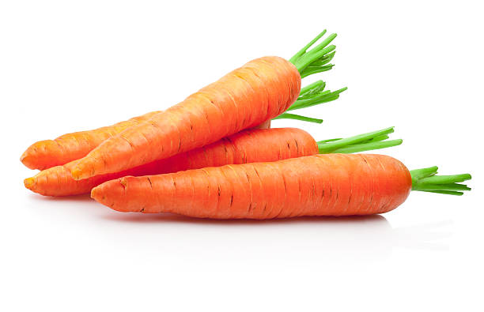
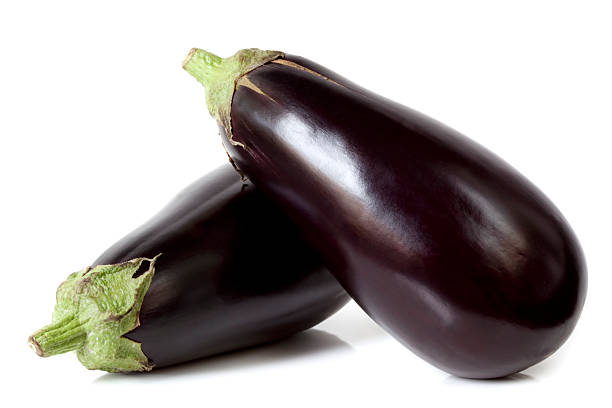
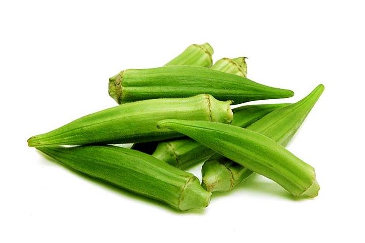
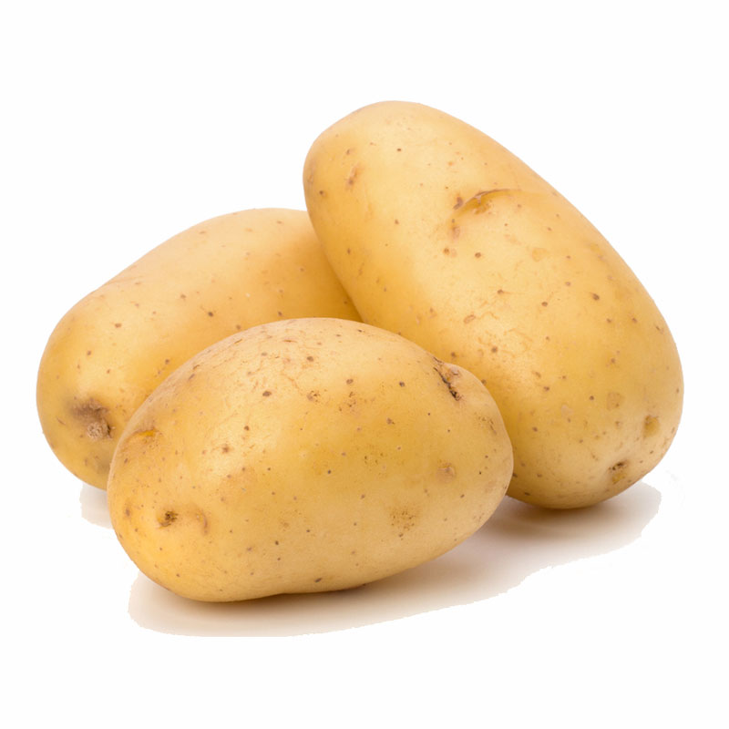

Cabbage has been cultivated for food for over 4,000 years! A single head of cabbage can have up to 40 leaves, all tightly wrapped together.


The carrot greens are also edible and nutritious! Wild carrots were once used as a way to communicate!

The eggplant is technically a fruit. It's a berry, to be precise! While the deep purple variety is the most common, eggplants come in a surprising range of colors including white, green, yellow, and even striped!

Okra has a lot of names around the world! In some places, it's called "lady's finger" due to its slender shape. Okra pods grow very quickly! They can reach maturity in just a few days.

Onions contain a volatile sulfur compound called sulfenic acid. When you cut an onion, you damage its cells, releasing this acid. There are over 27 different varieties of onions grown around the world!

Potatoes aren't actually roots! They are tubers, underground stems that store nutrients for the plant. Potatoes were the first vegetable ever grown in space!